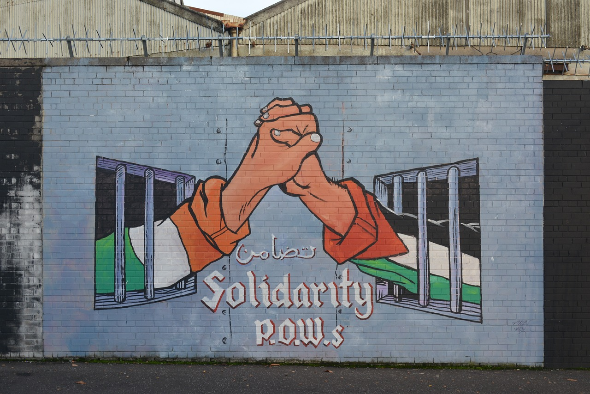

In our modern times, all the information in the world lay within reach because of the internet. As a consumer of media, it is important to remember your role in finding fair, reliable sources when things can seem strongly biased and hard to discern the truth.
an organization dedicated to global human rights, with up-to-date news on Palestine
From the UN, learn about the original Nakba of 1948
The International Committee of the Red Cross has many articles from on-the-ground medical staff working to give aid to civilians on both sides
The UN estimates at least 17,000 children have now been left orphaned and/or left unaccompanied during the famine and genocide.
An interview with UNICEF staff on Euronews detailing the horrors that no Palestinian child is safe from
AFSC, an organization dedicated to nonviolent ways of creating peace, giving often-forgotten and crucial context behind the conflict
This pdf contains movies, documentaries, books, websites and essays with more information and perspectives on the ongoing conflict
Companies to boycott due to profiting from Israel's genocide
A first-hand view from a Palestinian refugee describing her life after being displaced